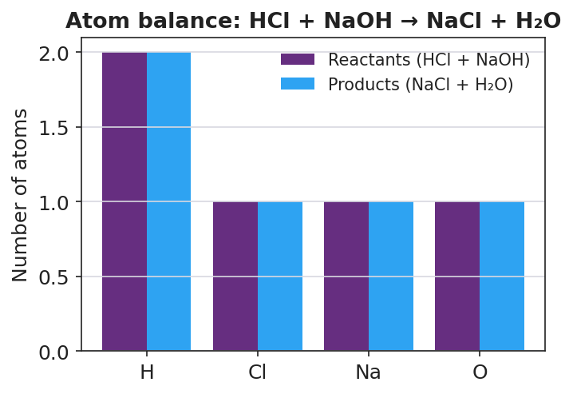

01 Phenomenon
A person eats a big, greasy, spicy meal and soon feels a burning in their chest — heartburn. The burning comes from hydrochloric acid (HCl) that the stomach makes to digest food. When too much acid backs up, it burns the unprotected tissue. The person takes an antacid — a chalky tablet or a spoonful of milky liquid that is a base. Within minutes, the burning fades. In class, your teacher shows the same idea: a beaker of base (deep blue with indicator) has acid added drop by drop. The color sweeps blue → green → yellow. At the green point, the solution is neutral — the acid and base have cancelled each other’s chemical character.
02 Driving question
Why does swallowing a base (an antacid) make the burning of stomach acid go away?
03 Notice & wonder
| I notice… | I wonder… |
|---|---|
Turn & Talk #1: The burning stopped after the antacid, and the beaker turned neutral after acid was added to base. In both cases something seemed to disappear — the burning, the blue color. In one sentence, what do you think actually happened to the acid and the base when they met?
04 Initial model
Before your teacher names the process: you mixed an acid and a base and the solution became neutral. Two new substances formed. One of them is the most ordinary, most neutral liquid on Earth. Predict the two products of an acid + base reaction, and explain your reasoning.
| Product I predict | Why I think it forms |
|---|---|
Hint: HCl can give away an H⁺. NaOH can give away an OH⁻. What do H⁺ and OH⁻ make when they join? What is left over to pair up?
My prediction for the two products: _______________________________________________
05 Investigate
Part 1 — ABCs: Antacid effectiveness (observe before you explain)
Your group has a beaker of dilute “stomach acid” (HCl) with universal indicator — it starts yellow/red because it is acidic. Add your assigned antacid a little at a time. Watch the indicator. Do NOT calculate anything — just observe and record.
| Antacid (base) | Starting color (acid) | Color after adding antacid | About how much antacid needed |
|---|---|---|---|
| Calcium carbonate tablet | yellow/red (acidic) | ||
| Magnesium hydroxide suspension | yellow/red (acidic) | ||
| Sodium bicarbonate brand | yellow/red (acidic) |
Did the acidic color move toward green/neutral when you added the antacid? _______________
Did any antacid fizz? Which one? What might fizzing tell you about a new substance forming? _______________________________________________
Part 2 — Predict the products of acid + base
For the simplest case, HCl + NaOH, fill in the trade-partners reasoning:
- H⁺ (from the acid) + OH⁻ (from the base) → _______________ (the most neutral liquid)
- Na⁺ (from the base) + Cl⁻ (from the acid) → _______________ (the leftover pair)
- So the two products of HCl + NaOH are: _______________ and _______________
Part 3 — Write and balance neutralization equations
For each acid–base pair, write the salt and water products, then balance by adding coefficients. Check that each kind of atom has the same count on both sides.
Equation A: HCl + NaOH (the simplest case)
HCl + NaOH → __________ + __________
| Element | Atoms on left | Atoms on right | Balanced? |
|---|---|---|---|
| H | |||
| Cl | |||
| Na | |||
| O |
Equation B: H₂SO₄ + NaOH (this acid donates TWO H⁺ — you will need a coefficient)
_____ H₂SO₄ + _____ NaOH → __________ + _____ H₂O
| Element | Atoms on left | Atoms on right | Balanced? |
|---|---|---|---|
| H | |||
| S | |||
| O | |||
| Na |
Equation C: HCl + Mg(OH)₂ (this base has TWO OH⁻ — you will need a coefficient)
_____ HCl + Mg(OH)₂ → __________ + _____ H₂O
| Element | Atoms on left | Atoms on right | Balanced? |
|---|---|---|---|
| H | |||
| Cl | |||
| Mg | |||
| O |
Part 4 — Reading the atom-balance figure
Look at figures/neutralization_atom_balance.png:

For the element hydrogen, how many atoms are on the reactant side? _______ On the product side? _______
Are the reactant and product bars the same height for every element? _______________
What does it mean about the atoms during a neutralization reaction when the bars match on both sides?
06 Make it make sense
For each acid–base pair below, write the salt and water products and balance the equation. These are the same pairs you practiced in the Investigation — confirm your work here. Show your atom counts.
1. HCl + NaOH
HCl + NaOH → __________ + __________ Atom check — H: ___ = ___ Cl: ___ = ___ Na: ___ = ___ O: ___ = ___
2. H₂SO₄ + NaOH
_____ H₂SO₄ + _____ NaOH → __________ + _____ H₂O Atom check — H: ___ = ___ S: ___ = ___ O: ___ = ___ Na: ___ = ___
3. HCl + Mg(OH)₂ (the antacid milk of magnesia)
_____ HCl + Mg(OH)₂ → __________ + _____ H₂O Atom check — H: ___ = ___ Cl: ___ = ___ Mg: ___ = ___ O: ___ = ___
07 Key vocabulary
- neutralization
- the chemical reaction of an acid with a base to produce a salt and water (acid + base → salt + water); it consumes the H⁺ ions from the acid and the OH⁻ ions from the base, moving the solution's pH toward neutral
- salt
- an ionic compound made of the cation (positive ion) from a base and the anion (negative ion) from an acid; the non-water product of a neutralization reaction (e.g., NaCl, MgCl₂, Na₂SO₄, KNO₃), not only table salt
- conservation of atoms
- the principle that atoms are neither created nor destroyed in a chemical reaction, only rearranged; in neutralization it is the reason the equation must be balanced, with the same number of each kind of atom on both sides
Use each term in a sentence about today’s investigation. Do not copy the definition — describe something you actually did or observed.
neutralization: _______________________________________________ _______________________________________________
salt: _______________________________________________ _______________________________________________
conservation of atoms: _______________________________________________ _______________________________________________
08 Revise your model
Return to your Initial Model (your prediction of the two products). Add vocabulary labels:
Label the two products: one is __________ and one is a __________.
Draw an arrow from “H⁺ + OH⁻” to the product they form. Label that product with its formula: __________
Write a revised appositive sentence for the antacid case:
Magnesium hydroxide — _________________________ — neutralizes stomach acid by reacting with HCl to form __________ and water.
Then finish this Because / But / So sentence:
A person with heartburn swallows an antacid (a base), and the burning stops, because __________________________________________, but __________________________________________, so __________________________________________.
09 Exit ticket
(a) Write and balance the neutralization equation for nitric acid (HNO₃) reacting with potassium hydroxide (KOH). Show the salt and water products.
_____ HNO₃ + _____ KOH → __________ + _____ H₂O
| Element | Atoms on left | Atoms on right |
|---|---|---|
| H | ||
| N | ||
| O | ||
| K |
(b) Write and balance the neutralization equation for hydrochloric acid (HCl) reacting with calcium hydroxide, Ca(OH)₂. Show the salt and water products.
_____ HCl + Ca(OH)₂ → __________ + _____ H₂O
| Element | Atoms on left | Atoms on right |
|---|---|---|
| H | ||
| Cl | ||
| Ca | ||
| O |
(c) In one sentence, explain why a balanced neutralization equation must have the same number of each kind of atom on both sides.
10 Explore further
- Antacid effectiveness lab: Provide several commercial antacids (e.g., a calcium-carbonate tablet, a magnesium-hydroxide suspension, a sodium-bicarbonate brand) and a fixed volume of dilute "stomach acid" (0.1 M HCl) with universal indicator added. Students add measured antacid to the acid and record how the indicator color changes (and, optionally, how many drops of acid each antacid can neutralize before the color shifts back). Discussion: which antacid neutralized the most acid, and what does "neutralized" mean at the particle level? Connect to the atom-balance figure in `figures/neutralization_atom_balance.png`.
- Neutralization color-change demonstration: To dilute NaOH with a few drops of universal indicator (deep blue/purple, basic), slowly add dilute HCl from a dropper. The class watches the color sweep blue → green → yellow → toward red as the solution moves from basic, through neutral, to acidic. The dramatic green "neutral" moment is the visual anchor for the lesson. No external URL is required; a Javalab "acid–base titration" or "neutralization" simulation can preview the color change before the live demo.
- Equation-writing practice set: Using a list of acid + base pairs, students write the products (salt + water) and balance the equation. This is the core skill for the neutralization-equation standard and the basis for the Exit Ticket.